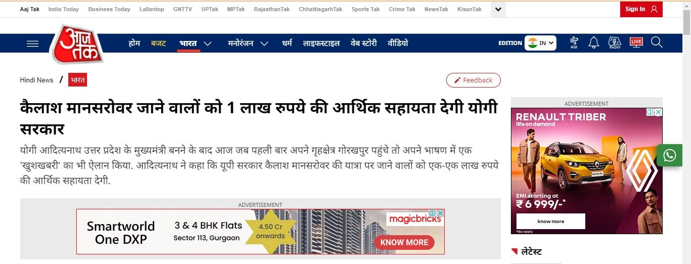

Kailash Mansarovar Yatra Subisdy: How Uttar Pradesh Government by CM Yogi Adityanath is helping pilgrims to go on Kailash Yatra?
Kailash Mansarovar Yatra Subsidy announced by Uttar Pradesh Government?
The Kailash Mansarovar Yatra is one of the most important and sacred pilgrimages a Hindu can make in his lifetime. The Uttar Pradesh CM Yogi Adityanath has announced that Rs 1 lakh subsidy will be given to Kailash Mansarovar pilgrims in 2019 also. Here’s a discussion on why this is justifiable.
Reasons why the subsidy for Kailash Mansarovar Yatra is a great step
-
UP not the first state to do so:
This is the most important reason why there is no reason to question this step by the Uttar Pradesh Chief Minister. Uttar Pradesh is certainly not the first state in India to have chosen to give subsidy for Kailash Yatra pilgrims. Many states including Kerala, Gujarat, Tamil Nadu, Haryana, Karnataka, Chhattisgarh and Delhi give subsidies to pilgrims every year.
-
Not very expensive
Another reason why the subsidy is not really a problem for the government is because it is not very expensive to provide it to the people. About Rs 5.8 crores will be spent from the UP government exchequer for the subsidy and that is really not a big deal considering so much money is being spent elsewhere.
-
Significance of the Yatra
The Kailash Mansarovar Yatra is not just any pilgrimage, it is one of the holiest places a Hindu devotee can go to pay his respects. Mount Kailash, considered to be the abode of Lord Shiva, has a lot of significance in Hindu mythology. Devotees believe that doing a ‘parikrama’ of Mount Kailash and taking a dip in the holy waters of Lake Mansarovar will wash away the sins of a hundred previous lifetimes. The Yatra is something that resonates deeply in the hearts of Hindu devotees who may not be able to go on it due to financial reasons. It is not inexpensive to make the Yatra if one pays out of one’s own pocket and the UP government’s gesture will go a long way in helping people realize their long-time dream.
-
Uttar Pradesh had subsidy for Kailash Yatris before
This is another important point that many people don’t know about. The truth is that Yogi Adityanath’s government increased the subsidy from Rs 50,000 to Rs 1, 00,000. Similarly, when the previous Akhilesh Yadav government came to power, it increased the Kailash Yatra subsidy from Rs 25,000 to Rs 50,000. So yes, it is true that CM Adityanath did double the subsidy amount, but the previous government did the same.
-
Means of ensuring public welfare
The government is there to make sure that the public are happy and satisfied with their lives. Letting the public fulfill their life’s dream is a good step and should be applauded.
Getting subsidy from Uttar Pradesh government
If you live in the state of Uttar Pradesh and want to go on the Kailash Mansarovar Yatra, here are the things you need to know about getting a subsidy from the government.
- The first thing that needs to be mentioned here is that you have to be a resident of Uttar Pradesh and an Indian citizen to avail of the subsidy.
- You have to have an ordinary Indian Passport with at least 6 months of validity left on the day of the start of the Yatra.
- This government is keen to make most governmental procedures online ones and this is no different. Everything can be done online. You have to fill the government’s subsidy application form online and submit the required soft copies online as well.
- You will be verified regarding the documents and information you provide. It is important thus to make sure that you provide the right information about yourself because any issues may mean that your application will get cancelled.
- After verification is done, you will be notified of the same. After this, you can go on the Kailash Mansarovar Yatra. When you return, you will have to submit proof of the Yatra after which you will get the subsidy amount transferred to your bank account.
The richness of the pilgrimage
The Kailash Mansarovar history and mythology is such that it pulls at the heart strings of devout Hindus. Mount Kailash stands tall at almost 22,000 feet and Lake Mansarovar is about 20 km away from it. It is certainly a sight for the sore eyes with the snow-capped mountains and the stunning natural beauty. It is true that Hindu pilgrims go on the Yatra for its religious significance but the experience is one that is truly unforgettable. It is said that people who are lucky enough to go on the Yatra come back with memories of a lifetime. The Kailash Mansarovar history is rich with mention of Lord Shiva, Lord Brahma and Devi Parvati. Enjoy this journey that very few people are able to go on.
Get in Touch
Have An Enquiry? Write To Us…
Popular Pilgrimage Packages
Information Links and Downloads
Talk to Kailash Yatra Expert
Submit your contact number.
Kailash Yatra Expert will call You within 1 minute.
(24X7 Free Service, India Number only)
Get All Details on Mobile


Related Packages

Kailash Mansarovar Aerial Darshan
2 Night / 3 Days
- Exclusive Aerial Darshan
- Stay at Best Hotel
- Free Gifts Included
Route : Lucknow → Nepalgunj(2N) → Lucknow →+0


Kailash Mansarovar From India By Heli
10 Night / 11 Days
Route : Lucknow (1N) → Nepalgunj (1N) → Purang (2N) →+6


Frequently Asked Questions
Related Blogs


We Got Featured in the Media


 Call
Call  WhatsApp
WhatsApp  Enquiry
Enquiry Connect with us :
Office Address :
Trip To Temples, 201, JOP Plaza
Sector 18, Noida, 201301
Uttar Pradesh, India
Call : +91-8510007751
E-mail : info@triptotemples.com